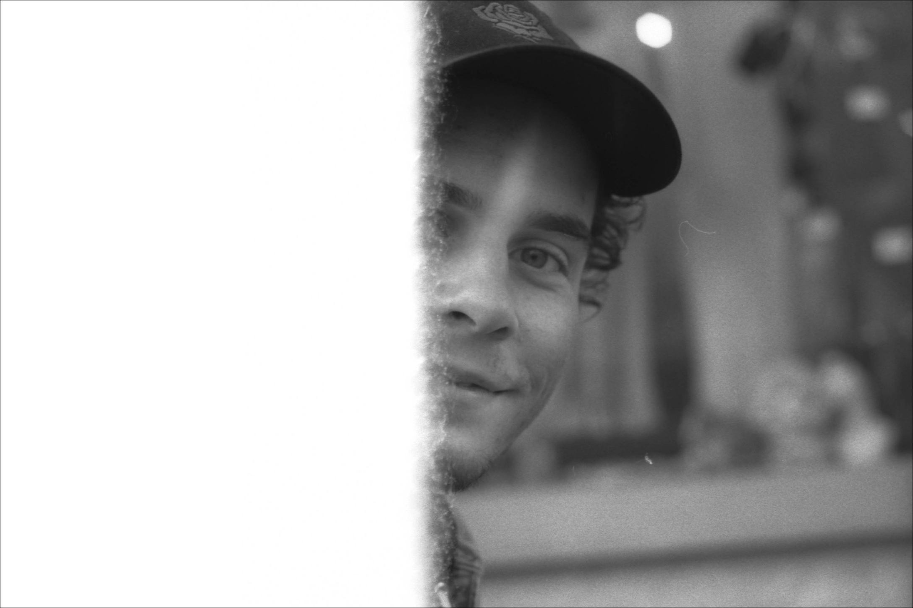

I am a visual design student at SUPSI Lugano, in Switzerland. In 2015 I concluded my apprenticeship as mediamatician at Swisscom, the biggest swiss telecommunication company. The work I gave as a diploma for my traineeship was awarded as the best in Switzerland in the field of ICT: this, other than an extreme sense of accomplishment, gave me back then good opportunities in the world of work. At the age of 19, I decided to move alone in the city of Bern, where I've got a job in the branch of HR. Here more than ever in my life, I had the chanche to try out things and figuring out what I wanted for my future-self. I learned that I like to interact with people and understand their needs, I tried out some Agile working methods and I continued to produce visual content as my main job. After two years in the Capital, I took the dedcision to pursue my interests and apply for the design school in Ticino, where I grew up. Now I'm following with interest and passion what I mostly like in my job, I'm giving my best and trying to become the designer I want to be one day!
Experience
2017 – actual
Visual Design student
SUPSI Lugano
2015 – 2017
HR Assistant
Swisscom AG, Worblaufen (BE)
2011 – 2015
Mediamatician Apprenticeship
Swisscom SA, Bellinzona (TI)
Visual Design student
SUPSI Lugano
2015 – 2017
HR Assistant
Swisscom AG, Worblaufen (BE)
2011 – 2015
Mediamatician Apprenticeship
Swisscom SA, Bellinzona (TI)
Awards
ICT Young Professional Award– 2015 Beste individuelle Praxisarbeit (IPA)
Languages
Italian
B2 German
B2 English
B2 German
B2 English
Skills
Graphic Design
Brand and Logo
Video & Animations
Web (HTML, CSS, some JS)
Brand and Logo
Video & Animations
Web (HTML, CSS, some JS)

Thank you for this typeface,
Raoul Gottschling
Raoul Gottschling